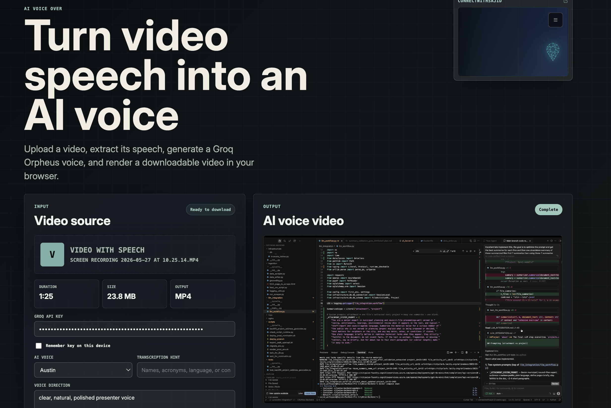

Audio AI / Build Log
AI Voice Over: building a custom speech replacement tool for social-first video
A week ago, a close point of contact started a new business. The digital media quality was strong, but the voiceover was not landing with the audience. That gap is what pushed me to build a custom AI voice replacement workflow instead of relying on another black-box tool.

Why I built this at all
About a week ago, someone close to me launched a business. The visual side of the content was already in good shape. The editing felt polished, the media had energy, and the presentation looked ready for social platforms. But the voice did not feel equally strong, and that matters more than people admit.
On short-form and social-first platforms, weak narration can quietly hurt retention, replay value, and shareability. People may not consciously say “the voice is the problem,” but they still scroll away if the delivery feels flat, unclear, or disconnected from the quality of the visual content.
That was the moment I decided to build this tool.
Yes, there are already many optimized commercial solutions in the market. But I still wanted to make my own. I wanted complete control over the workflow, the prompt surface, the rendering pipeline, and the developer experience. I also wanted something that could stay lightweight, local-first in feel, and easy to adapt for different use cases instead of forcing everything through a generic SaaS flow.
The user flow I wanted
The product goal was simple on the surface:
- Upload a video that already contains speech.
- Extract only the speech audio from that video.
- Transcribe what was said.
- Generate a cleaner AI voice from that transcript.
- Render the new voice back onto the original video.
- Download the finished output directly in the browser.
The harder part was making that flow feel practical and dependable without turning it into a heavy backend media service.
The technical shape of the system
The app is built as a browser-first workflow on top of Next.js 16, React 19, and a server route that talks to Groq. I used a very intentional split of responsibilities:
- The browser handles media preparation and final rendering.
- The server route handles speech understanding and speech generation.
- The whole interaction stays fast and direct.
1. Audio extraction happens in the browser
Instead of uploading the raw video immediately, the client first extracts an audio-only file from the selected video. That happens using browser media APIs and MediaRecorder, which gives a lighter payload for transcription and avoids unnecessary media transfer.
Under the hood, the app loads the uploaded video into a hidden media element, routes its audio through a MediaStream destination, records that stream, and packages the result as a new extracted-audio file. This step also let me put a guardrail around transcription size, since direct uploads to model providers can be sensitive to account tier and multipart overhead.
I capped automatic transcription at a safer extracted-audio size of 20 MB. If the media exceeds that, the app fails gracefully and tells the user to shorten or compress the input, or provide the transcript manually.
2. Groq handles both understanding and voice generation
Once the browser has the extracted speech track, the Next.js API route sends it to Groq transcription using whisper-large-v3-turbo. After transcription, the same route sends the transcript into Groq speech generation using canopylabs/orpheus-v1-english.
The nice part of this setup is that the transcript is not hidden from the user. The tool lets the user review and edit the transcript before rendering if needed. That matters because brand names, acronyms, and domain-specific terms often need a second pass, especially for business content.
I also added a transcription hint field so users can feed names, acronyms, or contextual language into the transcription step. That reduces avoidable errors in exactly the places where social media voice content tends to be least forgiving.
3. Voice direction is a real control surface, not a hidden prompt
One design choice I cared about was exposing voice direction clearly. The user can specify a tone like “clear, natural, polished presenter voice,” and that guidance is prepended into the speech request rather than buried inside code. It gives the tool more of a creative direction surface instead of behaving like a fixed one-click converter.
This makes the system more adaptable for different use cases, from business explainers to more conversational social clips.
4. The rendered video is rebuilt entirely in the browser
After the AI voice is generated, the app does not send the full video to a remote rendering backend. It rebuilds the output in the browser.
The rendering step works by drawing the original video frames onto a canvas, capturing that canvas stream, then combining it with the generated AI audio through the Web Audio API. From there, MediaRecorder records the combined stream into a downloadable output file.
In practice, that means the rendering stack uses:
- canvas.captureStream for frame output,
- Web Audio for the generated voice track,
- MediaRecorder for final file creation.
That approach keeps the product lightweight and removes the need for a custom cloud rendering service for the first version.
5. Fitting voice duration back to video length
One subtle but important implementation detail is timing. A generated voice track does not always match the original video duration exactly. To make the final output feel more usable, I added an option to fit the generated voice duration back to the original video length by adjusting playback rate within a bounded range.
That keeps the final output closer to the original edit timing instead of forcing the user to manually re-cut every clip.
What I liked about building this myself
Commercial tools often optimize for scale, but they also hide too much. Building this myself gave me full ownership over:
- how media gets preprocessed,
- how transcripts are surfaced and corrected,
- how the voice direction is controlled,
- how the final media is rendered,
- and how errors are communicated back to the user.
It also let me make the tool browser-first and creator-friendly. The user uploads a file, chooses a voice, optionally nudges the transcript, and gets back a new downloadable video without needing a complicated editing workflow.
What this project reminded me
I like building practical AI systems most when they solve a very specific real-world pain point. In this case, the problem was not “can we generate speech?” It was “can we improve the perceived quality of business content quickly enough that someone can actually use it in their workflow?”
That difference matters. The useful part of AI is not the model in isolation. It is the pipeline around the model: the extraction, the control points, the rendering, the constraints, and the final output that fits how people actually work.
If you are working on creator tooling, audio workflows, or practical AI products that need to feel fast and production-aware, I would love to connect through connectwithsajid.github.io.
React or ask a follow-up
Comments and reactions are powered by GitHub Discussions under the connectwithsajid brand.